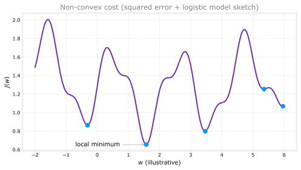
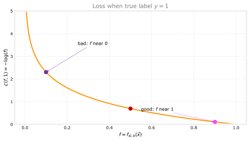
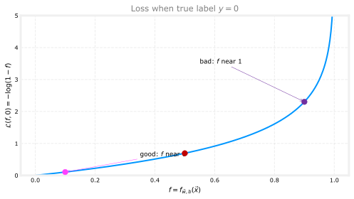
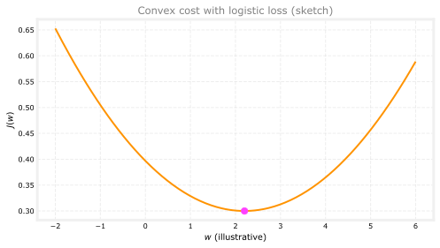
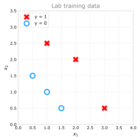
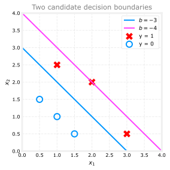

Cost Function for Logistic Regression
machine-learning
supervised-learning
classification
The cost function tells you how well a set of parameters fits the training data. That score gives gradient descent a target to push toward better…
The cost function tells you how well a set of parameters fits the training data. That score gives gradient descent a target to push toward better values of \(\vec{w}\) and \(b\).
On the logistic regression page you learned the model. Now you need a cost to train it. You might be tempted to reuse the squared error cost from linear regression, but that is not a good choice for classification. With a sigmoid output, squared error gives a wiggly, non-convex surface, so gradient descent can get stuck in local minima.
For logistic regression we use log loss instead (also called cross-entropy loss in the binary case). This page shows why squared error fails and how log loss builds a cost function that is much better suited to training.
Review Questions
1. What is the purpose of a cost function during training?
TipAnswer
It measures how well the current parameters fit the training data. Training tries to minimize that value.
Training Set Setup
Suppose you have \(m\) training examples (patients, emails, images, and so on). Each example has \(n\) features \(x_1, \ldots, x_n\). In binary classification, the label \(y\) is only 0 or 1.
The logistic regression model is
\[ f_{\vec{w},b}(\vec{x}) = g(\vec{w} \cdot \vec{x} + b) \]
where \(g\) is the sigmoid and \(f_{\vec{w},b}(\vec{x})\) is interpreted as \(P(y = 1 \mid \vec{x})\).
The training goal is to choose \(\vec{w}\) and \(b\) that fit these \((\vec{x}^{(i)}, y^{(i)})\) pairs well.
Squared Error from Linear Regression
For linear regression, the usual cost is the squared error (mean squared error). With the \(\frac{1}{2}\) placed inside the average,
\[ J(\vec{w}, b) = \frac{1}{2m} \sum_{i=1}^{m} \left(f_{\vec{w},b}(\vec{x}^{(i)}) - y^{(i)}\right)^2 \]
When \(f_{\vec{w},b}\) is a linear function, this cost is convex. Its graph looks like a bowl. Gradient descent can slide down to the global minimum without getting trapped in misleading dips.
Review Questions
1. For linear regression with squared error, why is a single global minimum helpful?
TipAnswer
Gradient descent is not fooled by many competing low points. If the cost is convex, descent can reliably move toward the best parameters for that cost.
Why Squared Error Fails for Logistic Regression
You might try the same squared error formula with logistic regression, where \(f_{\vec{w},b}(\vec{x})\) is a sigmoid output between 0 and 1.
That choice leads to a non-convex cost. The surface can look wiggly, with many local minima. Gradient descent may settle in a dip that is not the best overall fit.

For classification, squared error is a poor match. We need a different loss for each training example.
Loss on One Example
Rewrite the cost as an average of per-example losses. For one prediction \(f_{\vec{w},b}(\vec{x})\) and true label \(y\), define
\[ \mathcal{L}\big(f_{\vec{w},b}(\vec{x}),\, y\big) \]
For linear regression, a common choice is
\[ \mathcal{L}(f, y) = \frac{1}{2}\left(f - y\right)^2 \]
For logistic regression we will use a different \(\mathcal{L}\) so the overall cost becomes convex again.
The loss always takes the model output and the true label. Small loss means that example is fit well. Large loss means a big mistake on that example.
Logistic Loss
For logistic regression, use the log loss (also called cross-entropy loss in this binary setting). You can derive the idea from a coin-flip story in the log loss notes.
When the true label is \(y = 1\), the loss is
\[ \mathcal{L}(f, y) = -\log(f) \]
When the true label is \(y = 0\), the loss is
\[ \mathcal{L}(f, y) = -\log(1 - f) \]
Here \(f = f_{\vec{w},b}(\vec{x})\) and we require \(0 < f < 1\) from the sigmoid (in practice, very close to 0 or 1 but not exactly).
When \(y = 1\)
Plot \(-\log(f)\) for \(f\) between 0 and 1. Remember \(f\) is the sigmoid output, so only this range matters.

If the tumor is truly malignant (\(y = 1\)) and the model outputs \(f \approx 0.9\), the loss is tiny. If the model outputs \(f \approx 0.1\) while \(y\) is still 1, the loss is large. The loss pushes the model toward predictions close to 1 when the label is 1.
When \(y = 0\)
When \(y = 0\), the loss is \(-\log(1 - f)\).

If the true label is 0 (benign) and the model outputs \(f \approx 0\), the loss is small. As \(f\) approaches 1, the loss shoots upward. Predicting “almost certainly malignant” when the tumor is benign is punished heavily.
Review Questions
1. If \(y = 1\) and \(f_{\vec{w},b}(\vec{x}) = 0.2\), is the logistic loss small or large?
TipAnswer
Large. \(-\log(0.2)\) is much bigger than \(-\log(0.9)\). The model is confident in the wrong direction.
1. If \(y = 0\) and \(f_{\vec{w},b}(\vec{x}) \approx 1\), what happens to the loss?
TipAnswer
It becomes very large (approaches infinity as \(f \to 1\)). The model is strongly penalized for predicting class 1 when the true label is 0.
Overall Cost Function
The cost on the full training set is the average loss across all \(m\) examples.
\[ J(\vec{w}, b) = \frac{1}{m} \sum_{i=1}^{m} \mathcal{L}\big(f_{\vec{w},b}(\vec{x}^{(i)}),\, y^{(i)}\big) \]
Pick \(\vec{w}\) and \(b\) that minimize \(J(\vec{w}, b)\).
With this log loss, the cost is convex for logistic regression. Gradient descent can converge to a global minimum rather than getting stuck in shallow local dips. Proving convexity is beyond this course, but the shape is smooth and bowl-like, unlike the wiggly squared-error surface with sigmoid outputs.

Review Questions
1. How is \(J(\vec{w}, b)\) related to the per-example loss \(\mathcal{L}\)?
TipAnswer
\(J(\vec{w}, b)\) is the average of \(\mathcal{L}\) over all \(m\) training examples, \(\frac{1}{m} \sum_i \mathcal{L}(f_{\vec{w},b}(\vec{x}^{(i)}), y^{(i)})\).
Simplified Loss Function
In the sections above, log loss was written as two separate formulas, one for \(y = 1\) and one for \(y = 0\). That is correct, but a bit awkward in code because you need an if/else for every example.
Because \(y\) can only be 0 or 1 in binary classification, both cases fit into one line. Given prediction \(f = f_{\vec{w},b}(\vec{x})\) and true label \(y\), define
\[ \mathcal{L}(f, y) = -\,y \log(f) - (1 - y)\log(1 - f) \]
This single expression is equivalent to the two-case definition.
When \(y = 1\): the coefficient on the second term is \(1 - y = 0\), so that term disappears. You recover \(\mathcal{L}(f, 1) = -\log(f)\).
When \(y = 0\): the coefficient \(y\) on the first term is 0, so that term disappears. You recover \(\mathcal{L}(f, 0) = -\log(1 - f)\).
def loss_two_case(f, y):
if y == 1:
return -np.log(f)
return -np.log(1 - f)
def loss_unified(f, y):
return -y * np.log(f) - (1 - y) * np.log(1 - f)
for f_val in [0.8, 0.3]:
for y_val in [0, 1]:
a = loss_two_case(f_val, y_val)
b = loss_unified(f_val, y_val)
print(f"f={f_val}, y={y_val} two-case={a:.4f} unified={b:.4f} match={np.isclose(a, b)}")f=0.8, y=0 two-case=1.6094 unified=1.6094 match=True
f=0.8, y=1 two-case=0.2231 unified=0.2231 match=True
f=0.3, y=0 two-case=0.3567 unified=0.3567 match=True
f=0.3, y=1 two-case=1.2040 unified=1.2040 match=TrueReview Questions
1. In the unified loss, why does the \((1 - y)\log(1 - f)\) term vanish when \(y = 1\)?
TipAnswer
When \(y = 1\), the factor \((1 - y)\) equals 0, so the entire second term is multiplied by zero.
1. When \(y = 0\), which form of log loss does the unified formula reduce to?
TipAnswer
\(-\log(1 - f)\), because the \(-y\log(f)\) term is multiplied by \(y = 0\).
Simplified Cost Function
Recall that the cost is the average loss over all \(m\) training examples. Plug the unified loss into the definition from the previous section.
\[ J(\vec{w}, b) = \frac{1}{m} \sum_{i=1}^{m} \mathcal{L}\big(f_{\vec{w},b}(\vec{x}^{(i)}),\, y^{(i)}\big) \]
Substituting the one-line loss gives
\[ J(\vec{w}, b) = -\frac{1}{m} \sum_{i=1}^{m} \Big[ y^{(i)} \log f_{\vec{w},b}(\vec{x}^{(i)}) + \big(1 - y^{(i)}\big)\log\big(1 - f_{\vec{w},b}(\vec{x}^{(i)})\big) \Big] \]
Pulling the minus sign in front is the form you will see in code and in many textbooks. This is the cost function that almost everyone uses to train logistic regression.
A better-fitting model (decision boundary closer to the labels) produces a lower \(J(\vec{w}, b)\). A poor fit is punished with a higher cost.
y_ex = np.array([0, 0, 1, 1])
f_good = np.array([0.1, 0.2, 0.85, 0.9])
f_poor = np.array([0.8, 0.7, 0.4, 0.35])
def cost_unified(y, f):
return -np.mean(y * np.log(f) + (1 - y) * np.log(1 - f))
print(f"Better predictions: J = {cost_unified(y_ex, f_good):.4f}")
print(f"Poorer predictions: J = {cost_unified(y_ex, f_poor):.4f}")Better predictions: J = 0.1491
Poorer predictions: J = 1.1949Review Questions
1. What changes when you move from the two-case loss to the unified cost formula?
TipAnswer
You still use log loss, but you can compute every example with the same one-line expression and average over \(m\). No separate branch for \(y = 0\) vs \(y = 1\) in the math.
Why This Cost Function?
You might wonder why we pick this particular cost. There are many other functions you could average over the training set.
This log loss cost is closely tied to maximum likelihood estimation from statistics, a standard way to fit models from data. That background explains why this formula is so common in machine learning practice.
For this course, the important practical facts are simpler. This cost is convex for logistic regression, so gradient descent can reliably search for good parameters. You do not need to master the full statistical derivation to use it well.
Review Questions
1. True or false? You must derive maximum likelihood estimation yourself before you can train logistic regression in code.
TipAnswer
False. The derivation is useful context, but training only requires implementing the unified cost above and running gradient descent to minimize it.
ImportantTwo changes from the original lab
This page runs on NumPy 2.4.4 and Python 3.13. Two things changed (updated 2026-08-31).
- The course sigmoid and plotting helpers are written out inline rather than imported.
- The cost is computed with
np.logaddexpfrom the score \(z\) rather than from the sigmoid output. The two are mathematically identical, and the stable form cannot produce \(\log(0)\) when the model is very confident. Every number on this page is unchanged.
The dataset, the log loss, the parameter comparison and the printed values are the lab’s own.
Lab: Logistic Loss and Cost
In this lab you will implement the logistic regression cost function in code and use it to score two candidate models. You will use the same two-feature data set as in the decision boundary lab.
Goals
In this lab, you will:
- plot a small two-feature classification data set
- write
compute_cost_logisticusing the unified log loss formula from this page - compare costs for two decision boundaries and see that the better boundary has the lower cost
Dataset
The training set has six examples. Each row of X_train has features \(x_1\) and \(x_2\). The target y_train is 0 or 1.
import numpy as np
import matplotlib.pyplot as plt
plt.style.use("../../../deeplearning.mplstyle")
dlblue = "#0096ff"
dlmagenta = "#FF40FF"
X_train = np.array([[0.5, 1.5], [1.0, 1.0], [1.5, 0.5], [3.0, 0.5], [2.0, 2.0], [1.0, 2.5]])
y_train = np.array([0, 0, 0, 1, 1, 1])
def plot_data(X, y, ax):
pos = y.reshape(-1) == 1
neg = y.reshape(-1) == 0
ax.scatter(X[pos, 0], X[pos, 1], marker="x", s=80, c="red", label="y = 1")
ax.scatter(X[neg, 0], X[neg, 1], marker="o", s=100, facecolors="none",
edgecolors=dlblue, linewidths=2, label="y = 0")
ax.legend(loc="upper left", fontsize=9)Red X marks are \(y = 1\). Blue circles are \(y = 0\).

Sigmoid Helper
Logistic regression applies the sigmoid to the score \(z = \vec{w} \cdot \vec{x} + b\). The clip inside sigmoid only stops np.exp from overflowing on an extreme score; it does not change any value the sigmoid returns to floating-point precision.
The cost is computed from \(z\) directly rather than from the sigmoid output, using NumPy’s logaddexp. The two are mathematically identical, because
\[ -\,y\log(f) - (1-y)\log(1-f) \;=\; \log\!\left(1 + e^{z}\right) - y\,z, \]
but the right-hand side stays accurate when the model is very confident. Written the other way, a large positive \(z\) makes the sigmoid round to exactly 1.0, and \(\log(1 - f)\) becomes \(-\infty\). The data in this lab never reaches that range, so every number on the page is the same either way. The stable form is simply the one worth learning.
def sigmoid(z):
return 1.0 / (1.0 + np.exp(-np.clip(z, -500, 500)))Implement Cost Function
The cost is the average log loss over all \(m\) examples. For each example you compute \(f_{\vec{w},b}(\vec{x}^{(i)}) = g(\vec{w} \cdot \vec{x}^{(i)} + b)\) and add \(-y^{(i)}\log(f) - (1-y^{(i)})\log(1-f)\).
The function below follows the unified formula from the Simplified Cost Function section above.
def compute_cost_logistic(X, y, w, b):
m = X.shape[0]
cost = 0.0
for i in range(m):
z_i = np.dot(X[i], w) + b
# Equivalent to -y*log(f) - (1-y)*log(1-f), computed from z so that a
# very confident score cannot produce log(0).
cost += np.logaddexp(0.0, z_i) - y[i] * z_i
cost = cost / m
return costCheck One Model
Use \(\vec{w} = [1, 1]\) and \(b = -3\). These are the same parameters as in the decision boundary lab.
w_tmp = np.array([1.0, 1.0])
b_tmp = -3.0
print(f"Cost for w = [1, 1], b = -3: {compute_cost_logistic(X_train, y_train, w_tmp, b_tmp):.10f}")Cost for w = [1, 1], b = -3: 0.3668667864You should see a value near 0.3669.
Compare Two Boundaries
With \(\vec{w} = [1, 1]\), the decision boundary is the line where \(\vec{w} \cdot \vec{x} + b = 0\). That is the same as \(x_2 = -x_1 - b\).
- \(b = -3\) gives \(x_2 = 3 - x_1\) (fits the data reasonably well)
- \(b = -4\) shifts the line and misclassifies more points
The plot below overlays both lines on the training data.
x1_line = np.arange(0, 6)
x2_b3 = 3 - x1_line
x2_b4 = 4 - x1_line
fig, ax = plt.subplots(figsize=(4, 4))
ax.plot(x1_line, x2_b3, color=dlblue, linewidth=2, label="$b = -3$")
ax.plot(x1_line, x2_b4, color=dlmagenta, linewidth=2, label="$b = -4$")
plot_data(X_train, y_train, ax)
ax.axis([0, 4, 0, 4])
ax.set_xlabel("$x_1$")
ax.set_ylabel("$x_2$")
ax.set_title("Two candidate decision boundaries", color="gray")
ax.legend(loc="upper right", fontsize=9)
ax.grid(linestyle="--", alpha=0.35)
plt.tight_layout()
plt.show()
The \(b = -4\) boundary looks worse visually. The cost function should agree.
w_arr = np.array([1.0, 1.0])
print(f"Cost for b = -3: {compute_cost_logistic(X_train, y_train, w_arr, -3):.10f}")
print(f"Cost for b = -4: {compute_cost_logistic(X_train, y_train, w_arr, -4):.10f}")Cost for b = -3: 0.3668667864
Cost for b = -4: 0.5036808637The better-fitting boundary (\(b = -3\)) has the lower cost. That is exactly what you want from a training objective.
Review Questions
1. Why does the model with \(b = -4\) have a higher cost than the model with \(b = -3\) on this data set?
TipAnswer
\(b = -4\) pushes the decision boundary in a direction that disagrees with more training labels. Log loss adds a large penalty whenever \(f_{\vec{w},b}(\vec{x}^{(i)})\) is far from \(y^{(i)}\), so the average cost goes up.
1. In this lecture series, “cost” and “loss” have distinct meanings. Which one applies to a single training example?
Loss
Cost
Both Loss and Cost
Neither Loss nor Cost
TipAnswer
a. Loss measures error on one example. Cost is the average loss over the full training set.
1. For the simplified loss function, if the label \(y^{(i)} = 0\), then what does this expression simplify to?
\[ \mathcal{L}\big(f_{\vec{w},b}(\vec{x}^{(i)}),\, y^{(i)}\big) = -y^{(i)} \log f_{\vec{w},b}(\vec{x}^{(i)}) - \big(1 - y^{(i)}\big)\log\big(1 - f_{\vec{w},b}(\vec{x}^{(i)})\big) \]
\(\log\big(1 - f_{\vec{w},b}(\vec{x}^{(i)})\big) + \log\big(1 - f_{\vec{w},b}(\vec{x}^{(i)})\big)\)
\(\log f_{\vec{w},b}(\vec{x}^{(i)})\)
\(-\log\big(1 - f_{\vec{w},b}(\vec{x}^{(i)})\big) - \log\big(1 - f_{\vec{w},b}(\vec{x}^{(i)})\big)\)
\(-\log\big(1 - f_{\vec{w},b}(\vec{x}^{(i)})\big)\)
TipAnswer
d. When \(y^{(i)} = 0\), the term \(-y^{(i)} \log f_{\vec{w},b}(\vec{x}^{(i)})\) is zero. You are left with \(-\log\big(1 - f_{\vec{w},b}(\vec{x}^{(i)})\big)\).
What Comes Next
You now have the full logistic regression cost in one compact formula. Squared error is out. Log loss is in, written in a form that is easy to code and easy to minimize.
The next step is gradient descent for logistic regression, where you update \(\vec{w}\) and \(b\) using the gradients of this cost function.